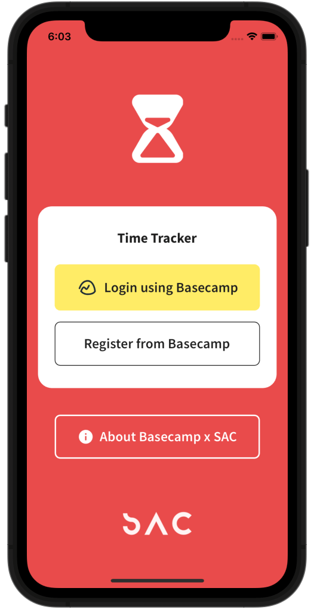
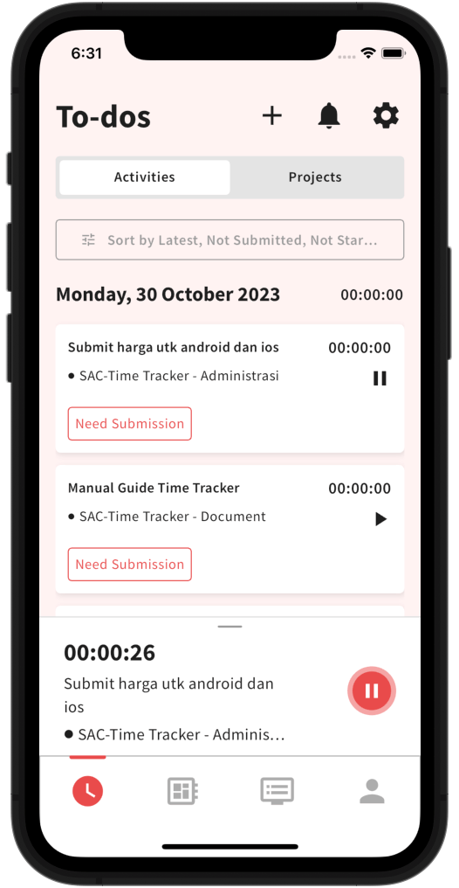

I found the concept of Orthogonality in The Pragmatic Programmer book. The authors encourage developers to create system that is orthogonal whenever possible. Simply put, orthogonality, as I understand it, means that if one part of the system is changed, other parts are not affected and do not need to be adjusted. One way to apply this is by ensuring that each component created has only one purpose. Even though this lead to having more smaller components, but it makes it easier for developers to work on each component. Changes are not a nightmare to implement because they do not disrupt other components. The system's units will be isolated and independent.
Unconsciously, my colleague and I applied this concept to an internal office product. We named it Time Tracker. It is a mobile application for recording employee task hours that synchronizes with Basecamp (the project management platform used by our office). We used Flutter to build this application. Flutter is a popular framework built on the Dart programming language, allowing us to create applications that can run on various platforms (cross-platform). Both Flutter and Dart are developed by Google. Flutter effectively abstracts the object-oriented programming features of Dart.
At that time, Flutter was new to me. I immediately sought out a comprehensive course to guide us in developing this application whenever we got stuck. It turned out to take quite some time to learn and experiment. Eventually, I told my colleague that we needed to decide how the application would be developed to ensure it would be maintainable in the future.
There were several architectural options, various state management libraries to choose from, and considerations for how the API would be consumed. In the end, I leaned towards the advice of an experienced Flutter developer. Thank you Andrea for your Dart and Flutter courses, this is the recipe that I used:
- Architecture: Riverpod
- State Management: Riverpod
- Important Dart Libraries: GoRouter, OAuth2, Sembast, stop_watch_timer, http
- Design Pattern: Repository
The main goal was Separation of Concerns: separating the user interface code from the business logic and separating the business logic from the data flow.
Minimum Viable Product
This application was required to record how long staff worked on a task. A stopwatch feature with start, pause, stop, and save functionalities was created to meet these expectations. The list of to-dos assigned to an employee in Basecamp would be displayed in the application if the employee logged in using their Basecamp account. Changes on to-do metadata in the application, such as the duration of the to-do, had to be persisted.
The flow is as follows: the user logs in with their Basecamp account, their list of to-dos is displayed, the user starts a stopwatch on a to-do, the stopwatch can be stopped and the elapsed time for that to-do is saved, accumulating the duration from previous ones.
Technical Implementation
This application is supported by a backend for accessing users' Basecamp resources.
The Basecamp API uses OAuth2 to obtain user authorization for accessing their related data. Therefore, the Time Tracker application will direct users to the Basecamp consent page in a browser for login and permission granting. The user will then be redirected back to the application with an Access Token.
The Access Token provided by Basecamp was sent from the Frontend to the Backend to be stored, so that this process didn't have to be repeated until the token needed to be refreshed. At that stage, the Backend had the authority to retrieve the user's To-do data. The Frontend requested the To-do data from the Backend through an API provided by the Backend. The Backend then supplied the requested list of To-dos. Where did this To-do data come from? It was periodically accessed from the Basecamp API by the Backend. Not all To-dos came from Basecamp; our database also stored new To-dos created by users through the Time Tracker application.
The To-do list provided by the Backend needed to be stored on the user's device to keep the number of requests efficient and to facilitate easy processing. This functionality was supported by Sembast.
When a user ran the Stopwatch on a To-do, the application saved each second locally. If the user wanted to switch To-dos or had finished and wanted to save it, the Frontend sent the metadata of that To-do to the Backend, ensuring it was persisted seamlessly.
The Hard Part
Not only user interface.
In my opinion, the challenging part of the MVP that I mentioned earlier is the retrieval and management of user to-do lists. This data originates from the backend's database and is also stored on the user's device in the form of a NoSQL-style database file (.db) that can be managed.
Data's Create, Read, Update, and Delete (CRUD) operations needed to be implemented using Sembast as its interface. There was synchronization between remote and local to-dos to ensure users always had their to-dos in the latest state (without losing progress). This synchronization had the potential to cause conflicts if both data sources underwent changes, which was very tricky.
Valuable Lessons
Coding requires dedication and patience, to help us with that, be strict with our own priorities, so we can use the time to rest and think about the product. Understands acceptance criteria and the product owner's expectations for the application, then taking the time to describe how it works will help direct the implementation to be on target. Draw the flow if it is hard to imagine.
It is also crucial to maintain good and healthy communication with the team, especially fellow developers, in my case the scope of the product was large, because other features that we may not need. I learned that collaboration is better than buy-in (just sell your idea out). Collaboration is also hard soft skill to develop!